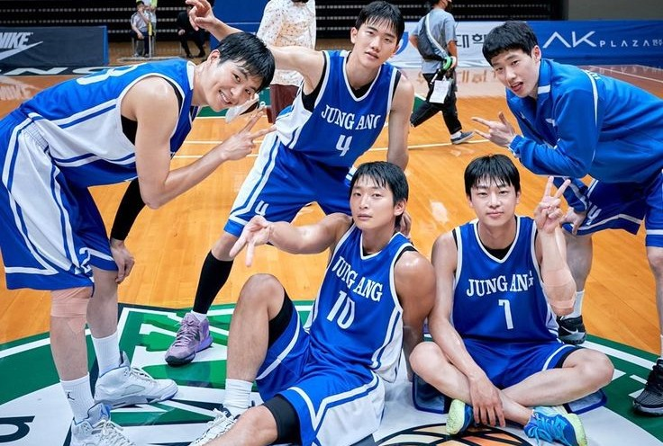

Tim Basket SMA Makati Juara 1 Turnamen Nasional 2025
SMA Makati kembali mencetak prestasi membanggakan! Kali ini, tim basket sekolah berhasil meraih Juara 1 dalam Turnamen Basket Nasional 2025 setelah melewati serangkaian pertandingan yang penuh tantangan dan persaingan sengit.
Turnamen yang diikuti oleh berbagai sekolah terbaik dari seluruh Indonesia ini berlangsung di Jakarta pada 20-25 Maret 2025. Tim basket SMA Makati menunjukkan performa luar biasa sejak babak penyisihan, mengalahkan lawan-lawan tangguh dengan strategi permainan yang solid dan semangat juang yang tinggi. Di babak semifinal, SMA Makati berhadapan dengan SMA Garuda dan berhasil meraih kemenangan dramatis dengan skor 72-68. Pertandingan final yang digelar pada 25 Maret 2025 mempertemukan SMA Makati dengan SMA Nusantara, yang dikenal memiliki tim basket kuat. Dengan determinasi tinggi dan kerja sama tim yang apik, SMA Makati sukses menutup pertandingan dengan skor 85-79, mengukuhkan diri sebagai juara nasional!
Kemenangan ini tidak lepas dari peran para pemain berbakat dan strategi cerdas yang diterapkan oleh pelatih. Rizky Aditya, sang kapten tim, menjadi bintang lapangan dengan mencetak 30 poin dalam pertandingan final. Tak hanya itu, Rendy Saputra dan Kevin Wijaya juga memberikan kontribusi besar dalam bertahan dan menyerang, memastikan kemenangan untuk tim. Pelatih SMA Makati, Coach Andi Santoso, mengungkapkan kebanggaannya terhadap para pemain. “Mereka telah bekerja keras sejak awal musim, berlatih dengan disiplin, dan tidak pernah menyerah dalam menghadapi tantangan. Kemenangan ini adalah buah dari kerja keras mereka,” ujarnya.
Prestasi ini tidak hanya milik para pemain, tetapi juga seluruh komunitas SMA Makati. Dukungan penuh dari sekolah, guru, dan teman-teman menjadi motivasi besar bagi tim basket untuk terus berjuang di setiap pertandingan. Para suporter yang hadir di arena juga memberikan semangat luar biasa dengan yel-yel khas SMA Makati yang menggema sepanjang turnamen.
Selamat untuk Tim Basket SMA Makati! Semoga terus berprestasi dan menginspirasi generasi muda untuk meraih mimpi mereka.
Bagikan Berita Ini :Terbaru
Sabtu, 30 Maret 2025
Tim Renang SMA Makati Sabet 3 Medali Emas di Kejuaraan Nasional
Atlet renang SMA Makati kembali menunjukkan dominasinya di ajang Kejuaraan Renang Nasional 2025. Mereka berhasil membawa pulang 3 medali emas dalam nomor gaya bebas, gaya kupu-kupu, dan estafet.
Baca Selengkapnya
Senin, 1 April 2025
Tim Badminton SMA Makati Juara Umum di Turnamen Antar Sekolah
Dengan performa luar biasa, tim badminton SMA Makati sukses menyabet gelar juara umum di Turnamen Badminton Antar Sekolah 2025 setelah mendominasi nomor tunggal dan ganda.
Baca Selengkapnya
Kamis, 14 Maret 2025
Tim Futsal SMA Makati Juara di Liga Futsal Pelajar
Setelah melalui pertandingan sengit, tim futsal SMA Makati berhasil keluar sebagai juara dalam Liga Futsal Pelajar 2025. Kemenangan ini mengukuhkan posisi mereka sebagai salah satu tim terkuat di tingkat sekolah menengah.
Baca Selengkapnya
Berita Lainnya

Senin, 18 Maret 2025
Siswa SMA Makati Lolos ke Oxford University
Selamat kepada Yua, salah satu siswa SMA Makati yang diterima di University of Oxford. Ia akan menempuh pendidikan di bidang Hukum dengan beasiswa prestasi.
Baca Selengkapnya

Jumat, 22 Maret 2025
Dua Siswa SMA Makati Juara 1 Lomba Karya Ilmiah Nasional
Prestasi membanggakan diraih oleh dua siswa SMA Makati, Yohan dan Sanny, yang berhasil meraih Juara 1 dalam Lomba Karya Ilmiah Nasional 2025. Mereka meneliti inovasi energi terbarukan yang berpotensi mengurangi polusi udara.
Baca Selengkapnya
Rabu, 20 Maret 2025
Siswa SMA Makati Lolos Program Pertukaran Pelajar ke Jepang
Salah satu siswa terbaik SMA Makati, Yasmine, terpilih untuk mengikuti program pertukaran pelajar ke Jepang. Selama satu semester, ia akan belajar di Tokyo dan memperdalam budaya serta sistem pendidikan Jepang.
Baca Selengkapnya
Minggu, 10 Maret 2025
Tim Teater SMA Makati Raih Penghargaan di Festival Drama Nasional
Penampilan spektakuler tim teater SMA Makati dalam Festival Drama Nasional 2025 berhasil membawa mereka meraih penghargaan "Pementasan Terbaik". Keunikan alur cerita dan akting para siswa mendapat pujian dari juri.
Baca Selengkapnya
Jumat, 15 Maret 2025
Band SMA Makati Menangkan Lomba Musik Antar Sekolah
Band sekolah SMA Makati tampil gemilang dan berhasil meraih Juara 1 dalam Lomba Musik Antar Sekolah 2025. Dengan aransemen unik dan penampilan penuh energi, mereka sukses mencuri perhatian para juri dan penonton.
Baca Selengkapnya
Sabtu, 23 Maret 2025
Atlet Taekwondo SMA Makati Raih Medali Emas di Kejuaraan Nasional
Dengan kerja keras dan latihan intensif, atlet taekwondo SMA Makati berhasil meraih medali emas di Kejuaraan Taekwondo Nasional 2025. Prestasi ini menjadi bukti bahwa SMA Makati selalu melahirkan atlet berprestasi.
Baca Selengkapnya